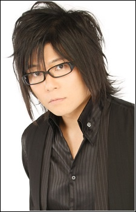

Toshiyuki Morikawa

Characters Voiced by Toshiyuki Morikawa
Bruno
Pokemon
Simon Callum
The Ancient Magus' Bride
Wallace
Pokemon Diamond and Pearl
Wilhelm Schultz
Allison and Lillia
Go Back to the M's